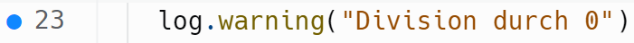

Debugging¶
Debugging mit print()¶
Logische Fehler treten häufig erst dynamisch auf und lassen sich nicht durch statische Code-Analyse durch Lint-Tools finden. Hier muss man dann den aktuellen Programmfluss nachvollziehen. Dies nennt man Debugging. Die einfachste Form ist das print-Debugging bei der man den Code mit print()-Befehlen zuspammt.
Wir erweitern mal unsere Divisionsfunktion mit schönen vielen print()-Statements. Üblich ist es zum Beispiel, die Eingangsparameter auszugeben, Fehler und Warnungen auszugeben, als auch dann Ergebnisse zu loggen.
def division(zaehler, nenner):
print(f"Debug: Eingabe Zaehler: {zaehler}")
print(f"Debug: Eingabe Nenner: {nenner}")
if not isinstance(nenner, (int, float)):
print(f"Error: Nenner nicht vom Datentyp `int` oder `float`, sondern vom Typ {type(nenner)}")
raise ValueError(f"Nenner nicht vom Datentyp `int` oder `float`, sondern vom Typ {type(nenner)}")
elif not isinstance(zaehler, (int, float)):
print(f"Error: Zaehler nicht vom Datentyp `int` oder `float`, sondern vom Typ {type(zaehler)}")
raise ValueError(f"Zaehler nicht vom Datentyp `int` oder `float`, sondern vom Typ {type(zaehler)}")
elif not nenner:
print("Warning: Division durch 0")
return None
else:
ergebnis = zaehler / nenner
print(f"Info: Das Ergebnis von {zaehler}/{nenner} = {ergebnis}")
return ergebnis
Jetzt können wir insbesondere im Fehlerfall sehr gut nachvollziehen was genau geschehen ist. Zum Beispiel bei der Division durch 0.
division(10, 0)
Debug: Eingabe Zaehler: 10
Debug: Eingabe Nenner: 0
Warning: Division durch 0
Allerdings haben wir auch im korrekten Fall sehr viele Ausgaben. Das kann sehr störend sein, weil man dann richtige Fehler sehr schnell übersieht. Zum Beispiel erzeugen wir zehn Divisionen, von der eine eine Division durch 0 war.
for nenner in range(-2, 8):
division(10, nenner)
Debug: Eingabe Zaehler: 10
Debug: Eingabe Nenner: -2
Info: Das Ergebnis von 10/-2 = -5.0
Debug: Eingabe Zaehler: 10
Debug: Eingabe Nenner: -1
Info: Das Ergebnis von 10/-1 = -10.0
Debug: Eingabe Zaehler: 10
Debug: Eingabe Nenner: 0
Warning: Division durch 0
Debug: Eingabe Zaehler: 10
Debug: Eingabe Nenner: 1
Info: Das Ergebnis von 10/1 = 10.0
Debug: Eingabe Zaehler: 10
Debug: Eingabe Nenner: 2
Info: Das Ergebnis von 10/2 = 5.0
Debug: Eingabe Zaehler: 10
Debug: Eingabe Nenner: 3
Info: Das Ergebnis von 10/3 = 3.3333333333333335
Debug: Eingabe Zaehler: 10
Debug: Eingabe Nenner: 4
Info: Das Ergebnis von 10/4 = 2.5
Debug: Eingabe Zaehler: 10
Debug: Eingabe Nenner: 5
Info: Das Ergebnis von 10/5 = 2.0
Debug: Eingabe Zaehler: 10
Debug: Eingabe Nenner: 6
Info: Das Ergebnis von 10/6 = 1.6666666666666667
Debug: Eingabe Zaehler: 10
Debug: Eingabe Nenner: 7
Info: Das Ergebnis von 10/7 = 1.4285714285714286
Debugging mit logging¶
Deshalb verwendet man bei komplexeren Programmen meist ein logging-Paket. Diese erlauben es print-Statements Kategorien zuzuordnen und anhand dieser zu filtern. In der Python-Bibliothek logging sind die Kategorien: debug, info, warning, error und critical.
import logging
log=logging.getLogger("meinlog")
def division(zaehler, nenner):
log.debug(f"Eingabe Zaehler: {zaehler}")
log.debug(f"Eingabe Nenner: {nenner}")
if not isinstance(nenner, (int, float)):
log.error(f"Nenner nicht vom Datentyp `int` oder `float`, sondern vom Typ {type(nenner)}")
raise ValueError(f"Nenner nicht vom Datentyp `int` oder `float`, sondern vom Typ {type(nenner)}")
elif not isinstance(zaehler, (int, float)):
log.error(f"Zaehler nicht vom Datentyp `int` oder `float`, sondern vom Typ {type(zaehler)}")
raise ValueError(f"Zaehler nicht vom Datentyp `int` oder `float`, sondern vom Typ {type(zaehler)}")
elif not nenner:
log.warning("Division durch 0")
return None
else:
ergebnis = zaehler / nenner
log.info(f"Das Ergebnis von {zaehler}/{nenner} = {ergebnis}")
return ergebnis
Wenn wir jetzt die Funktion aufrufen, sehen wir nur noch die Division durch 0 Warnung.
log.setLevel(logging.WARNING)
for nenner in range(-2, 8):
division(10, nenner)
Division durch 0
Wir können allerdings bei Bedarf, wie bei der Fehlersuche den Loglevel auch erhöhen. Zum Beispiel wollen wir alle Debug-Nachrichten erhalten.
log.setLevel(logging.DEBUG)
for nenner in range(-2, 8):
division(10, nenner)
Division durch 0
Ferner erlaub das Logging auch automatisch weitere Informationen hinzuzufügen. Wir sehen im Log oben bereits, das nicht nur das Level (INFO, DEBUG, WARNING) sondern auch den Namen des Loggers (meinlog). Wir können dieses Format anpassen um z.B. auch die Zeit auszugeben, was insbesondere wichtig ist um zu verstehen wann etwas passiert ist.
sh=logging.StreamHandler()
formatter = logging.Formatter('%(asctime)s %(name)s %(levelname)s: %(message)s')
sh.setFormatter(formatter)
log.addHandler(sh)
log.setLevel(logging.INFO)
for nenner in range(-2, 8):
division(10, nenner)
2025-05-02 18:43:07,389 meinlog INFO: Das Ergebnis von 10/-2 = -5.0
2025-05-02 18:43:07,389 meinlog INFO: Das Ergebnis von 10/-1 = -10.0
2025-05-02 18:43:07,390 meinlog WARNING: Division durch 0
2025-05-02 18:43:07,390 meinlog INFO: Das Ergebnis von 10/1 = 10.0
2025-05-02 18:43:07,391 meinlog INFO: Das Ergebnis von 10/2 = 5.0
2025-05-02 18:43:07,391 meinlog INFO: Das Ergebnis von 10/3 = 3.3333333333333335
2025-05-02 18:43:07,393 meinlog INFO: Das Ergebnis von 10/4 = 2.5
2025-05-02 18:43:07,393 meinlog INFO: Das Ergebnis von 10/5 = 2.0
2025-05-02 18:43:07,393 meinlog INFO: Das Ergebnis von 10/6 = 1.6666666666666667
2025-05-02 18:43:07,394 meinlog INFO: Das Ergebnis von 10/7 = 1.4285714285714286
In der Praxis wird das Logging sehr häufig insbesondere in Cloud-Anwendungen verwendet. Da diese ja keine Bildschirme haben, müssen Fehler in Logs gesucht werden. Solange alles ok ist, läuft so eine Anwendung dann z.B. im Log-Level INFO, mit nur wenig Ausgaben. Tritt ein Fehler auf, so wird der Server auf das Log-Level DEBUG gesetzt und man sucht in den detaillierten Logs dann nach Informationen, um den Fehler einzugrenzen.
Debugging durch Debug-Oberflächen¶
Viele integrierte Entwicklungsumgebungen (IDE) bieten an direkt Debugger auszuführen. Diese Debugger erlauben es die dynamische Ausführung des Codes zu unterbrechen. Ziel ist es kurz vor Auftreten des Fehlers die Ausführung anzuhalten, um dann das Fehlerverhalten genau beobachten zu können.
Dabei werden meist zwei Formen der Unterbrechung unterstützt:
Die Unterbrechung in bestimmten Code-Zeilen mit Hilfe von Breakpoints.
Die Unterbrechung bei bestimmten Exceptions.
Debugging in Jupyter-Notebooks in VSCode¶
Die Debug-Oberflächen sehen je nach IDE etwas anders aus, verfügen aber über ähnliche Funktionen. Dieses Jupyter Notebook wurde in VSCode geschrieben, welches wir als erstes Beispiel betrachten.
Dafür kann man meist in der IDE links neben eine Zeile klicken um einen Breakpoint ⬤ zu setzen. Wir setzen dafür einen Breakpoint auf die Zeile 11 auf die Ausgabe der Warnung.

Dann wird der Code in einer speziellen Debugumgebung ausgeführt, die es erlaub die Ausführung zu unterbrechen. In unserm Notebook in VSCode starten wird diese durch das Symbol .
def division(zaehler, nenner):
log.debug(f"Eingabe Zaehler: {zaehler}")
log.debug(f"Eingabe Nenner: {nenner}")
if not isinstance(nenner, (int, float)):
log.error(f"Nenner nicht vom Datentyp `int` oder `float`, sondern vom Typ {type(nenner)}")
raise ValueError(f"Nenner nicht vom Datentyp `int` oder `float`, sondern vom Typ {type(nenner)}")
elif not isinstance(zaehler, (int, float)):
log.error(f"Zaehler nicht vom Datentyp `int` oder `float`, sondern vom Typ {type(zaehler)}")
raise ValueError(f"Zaehler nicht vom Datentyp `int` oder `float`, sondern vom Typ {type(zaehler)}")
elif not nenner:
log.warning("Division durch 0")
return None
else:
ergebnis = zaehler / nenner
log.info(f"Das Ergebnis von {zaehler}/{nenner} = {ergebnis}")
return ergebnis
division(10, 0)
2025-05-02 18:43:07,400 meinlog WARNING: Division durch 0
Dies startet den Debug-Modus. In diesem wird die aktuelle Zeile vorgehoben als auch die aktuellen Variablen im Speicher angezeigt.

In der Debugumgebung kann man dann Zeile für Zeile vorgehen durch drücken von und damit nachvollziehen wie das Programm bearbeitet wird und welche Variablen sich ändern.
Debugging in repl.it¶
In repl.it sieht die Debugging-Oberfläche ähnlich aus. Wir setzen einen Breakpoint ⬤ durch klicken auf die Zeile 11 auf die Ausgabe der Warnung.

Die Debugumgebung wird durch gestartet. Sie erlaub die Ausführung zu starten, einzelne Zeilen auszuführen, den Schritt zu überspringen oder bis zum Breakpoint auszuführen (links nach rechts).
{kind=link}
Auch hier werden die aktuellen Variablen angezeigt als auch der Stack.